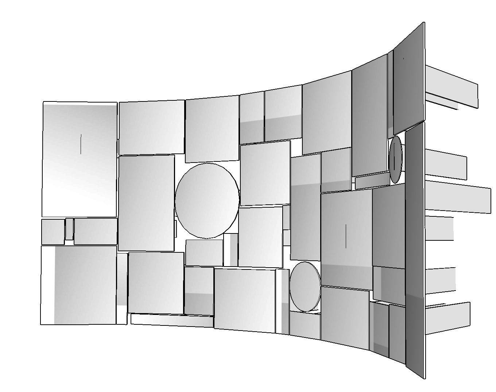

"Als symbolische reflectie willen we graag een probleem aankaarten dat vandaag in de wereld speelt, zoals sociale media, waarin mensen tegenwoordig sneller naar een ander kijken dan naar zichzelf."
"Als symbolische reflectie willen we graag een probleem aankaarten dat vandaag in de wereld speelt, zoals sociale media, waarin mensen tegenwoordig sneller naar een ander kijken dan naar zichzelf."

Visie
Reflectie
Het kunstwerk is een compositie samengesteld uit aparte reflecterende elementen, die elk een eigen perceptie of betekenis hebben. Ze worden geassembleerd tot een visueel samenhangend geheel, en zijn elk afzonderlijk aan een frame gelast dat het steunpunt vormt van het werk. De verschillende manieren van verbinden zorgen voor het multidisciplinaire karakter van het werk. De toeschouwer kan participeren aan het kunstwerk, waardoor het tegelijkertijd ook een installatie is, door zich te laten omringen door de licht gebogen vorm van reflecterende componenten. Ze tonen namelijk telkens fragmenten van het lichaam, waardoor op een bijzondere manier gekeken wordt naar jezelf. Het spel van reflecties creëert spanning en dynamiek.